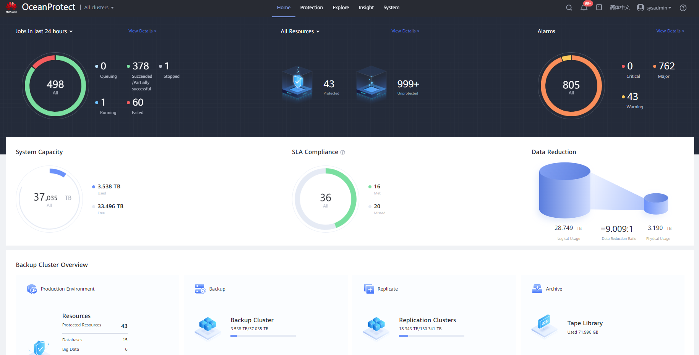

The OceanProtect software is the service management platform of the OceanProtect. The OceanProtect software has been loaded to the OceanProtect before the OceanProtect delivery. On any maintenance terminal connected to the OceanProtect, you can log in to the OceanProtect WebUI using the management network port IP address of the OceanProtect through a browser.
Prerequisites
- The maintenance terminal meets the following requirements:
- Its operating system and browser are compatible.
The OceanProtect WebUI supports multiple OSs and browsers. For details about the compatibility information, use OceanProtect Compatibility Query.
- To ensure normal display, you are advised to set the zoom ratio of the browser or the system to 100%.
- For Windows 7, choose Control Panel > Display. For other operating systems, perform operations based on the actual GUI.
- In a browser, press Ctrl+0 (Windows) or Command+0 (MAC OS).
- The communication between the maintenance terminal and OceanProtect is normal.
- Its operating system and browser are compatible.
- To use ADFS for login, the system administrator must enable the Windows ADFS configuration switch in advance.
Context
- This section uses the Windows OS as an example to describe how to log in to the OceanProtect WebUI.
- If a user does not perform any operations after logging in to the system for a period longer than the timeout interval (60 minutes by default and modifiable), the system logs out automatically.
Precautions
Use different types of browsers to access the OceanProtect and DeviceManager management pages. Otherwise, when a user logs out of or switches the language on one management page, the other management page exits or the language is switched at the same time.
Procedure
- On the maintenance terminal, open a browser.
- Enter https://XXX.XXX.XXX.XXX:25080 in the address box and press Enter.
The OceanProtect login page is displayed.
XXX.XXX.XXX.XXX indicates the management IP address of the controller.

The web browser may prompt that the website has a security certificate error. If the IP address is correct, you can ignore the prompt and continue accessing OceanProtect.
- (Optional) Set a language.
OceanProtect supports simplified Chinese and English.
- Set the login mode.
- Local user: Log in to the OceanProtect WebUI through local authentication.
- LDAP user/LDAP user group: Log in to the OceanProtect WebUI through LDAP domain authentication. You can log in to the OceanProtect WebUI in LDAP domain authentication mode only after an LDAP server is properly configured.
- Type your username and password.
- If Verification Code is displayed, enter the correct verification code.
- For details about the default password of user sysadmin for logging in to the OceanProtect WebUI for the first time, see the OceanProtect Appliance 1.6.0 Account List. For system security purposes, you are advised to change your login password periodically. For details about how to change the password, see the OceanProtect Appliance 1.6.0 Account List.
- If the Login password+Email One-time password authentication mode is used, click Send One-Time Password. Then, the system will send the one-time password to the recipient email address. Enter the one-time password you received.
- Log in to the OceanProtect WebUI.
- Click Log In to display the OceanProtect WebUI.

- The GUI may vary slightly depending on the product version and model. The actual GUI prevails.
- To learn details about each step and operation, click
 to view online help.
to view online help. - You can click the username in the upper right corner of the page and select Log Out to log out of the OceanProtect WebUI.
- Click Log In Using ADFS to switch to the ADFS-based login page. Enter the username and password to log in to the OceanProtect WebUI.

- Only 1.6.0 and later versions are supported.
- If you use ADFS to log in to the OceanProtect WebUI, you need to create an ADFS user first.
- The GUI may vary slightly depending on the product version and model. The actual GUI prevails.
- To learn details about each step and operation, click
 to view online help.
to view online help. - You can click the username in the upper right corner of the page and select Log Out to log out of the OceanProtect WebUI.
- Click Log In to display the OceanProtect WebUI.